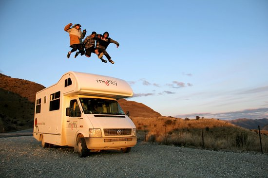
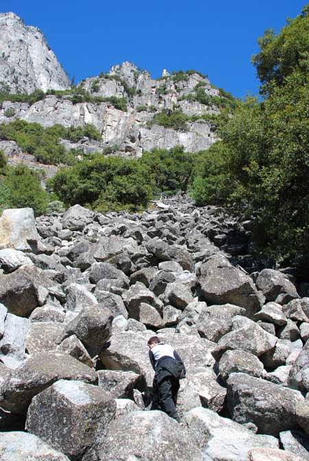

My Favorite Things to Do
Coming closer and closer to me graduating, I try to make the most of my last year and a half in highschool year because before you know it its gone. I like out hang out with friends and take to the beach. We love dancing and going to eat at Moe's
I like to do alot of things, as a teenage girl, I like to hang out with friends, go To the beach, normal stuff but� My ultimate favorite thing to do is to just get in the car with my friends and drive while our favorite music is blasting. Its just that feeling of freedom and the time you get to spend with your favorite people seem endless. It takes us back to the feeling of summer, but it could be any season of the year. As long as we spend time together.
 Dancing is life
Dancing is life
Another one of my hobbies is traveling, I have been to many places, and plan to go to many more in my future. My favorite place in the U.S. is probably Washington DC because it is just a beautiful place to go with many important monuments to visit, and it is just and important part of us. I also enjoy going out of the country. Mazatl�n, Mexico is such a beautiful place and I don�t think words can do it justice. Its so clear and just a great place to be. If you were planning to go on any type of vacation any time soon, Definitely Mazatl�n.
 Travel AgencyI also love food, I know your thinking �But food isn�t a hobby�, Well.. it is for me and my friends. I have a goal to try every type of food there is from Mexican to Indian, Jamaican, Romanian, Austrialian, you name it we have tried or really want to try it. I think it is good to expand the variety of things you try and do because who knows where you will end up in life and you can�t knock it till you try it!
 This is a good resturant
This is a good resturant
I also love to go rock climbing, and no, not the kind that is indoors, but the real kind. Table Rock is a place I have visited since I was a kid and recently We climbed it! It was an adventurous, and a little �reckless� according to my mother, but it was a fun day that made me feel like I could conquer anything. On the way their its this little waterfall, gosh I love that waterfall. Its water is so clear and you can just enjoy yourself. They also have this amazing Ice cream place, �Strawberry Hill� their ice cream is homeade and just yummy, and everyone is so nice. Its just a great place to be.
Mountain Climbing 